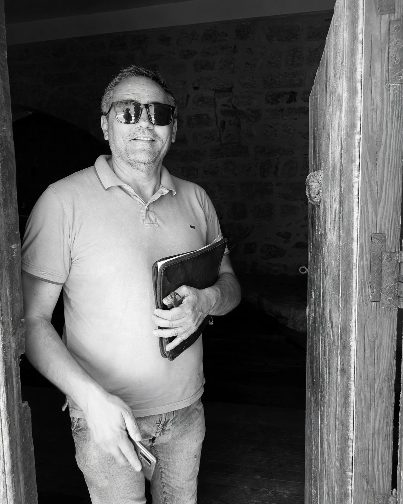

01
Il luogo prima del disegno
Ogni progetto parte da un'analisi concreta: esposizione, brezze, ombre, accessi, vincoli. In Sicilia il clima non è uno sfondo: è un materiale di progetto.
Nuova sede — inaugurazione 12.12.2026 · Borgetto (PA)

Studio
Un progetto alla volta, dal sopralluogo alla consegna.
(01) — La storia
Siamo nati in un territorio dove costruire significa innanzitutto capire: il suolo, il vento, l'ombra, il modo in cui una famiglia vive una casa.
Lo studio opera da oltre vent'anni nella Sicilia occidentale, tra Borgetto, Palermo e la costa trapanese. Nasce come studio di progettazione architettonica e cresce integrando competenze diverse: oggi lo studio è condotto dai due soci architetti, con il supporto di consulenti esterni quando il progetto lo richiede.
Questa struttura ci permette di seguire l'opera per intero — progetto, pratiche, strutture, cantiere — senza demandare a terzi la responsabilità del risultato.
Lavoriamo soprattutto su committenza privata: case unifamiliari, ristrutturazioni di edifici esistenti, interni, spazi commerciali e piccole strutture ricettive. A questi si affiancano incarichi pubblici e consulenze tecniche.
Affidiamo la realizzazione a maestranze e artigiani del territorio, con cui condividiamo il livello di finitura richiesto dal progetto. Il risultato è un'architettura contemporanea che non rinnega il contesto in cui si inserisce.
(02) — Filosofia
01
Ogni progetto parte da un'analisi concreta: esposizione, brezze, ombre, accessi, vincoli. In Sicilia il clima non è uno sfondo: è un materiale di progetto.
02
Struttura, involucro e impianti vengono coordinati dallo stesso modello. Le scelte costruttive non sono un dettaglio esecutivo: definiscono lo spazio.
03
Seguiamo la direzione lavori con continuità: sopralluoghi, verifiche e un referente unico per il committente, dall'inizio alla consegna delle chiavi.
(03) — Le persone

Socio · Architetto
Progettista e direttore dei lavori. Si occupa di progettazione architettonica residenziale e commerciale, ristrutturazioni e allestimenti, seguendo il progetto dalla fattibilità alla consegna dell'opera.
Socio · Architetto
Laurea magistrale in Architettura e Ingegneria edile all'Università di Palermo. Coordina il progetto architettonico e la modellazione BIM, dal concept al coordinamento delle discipline.
La nuova sede dello studio apre a Borgetto nel dicembre 2026. Non un semplice ufficio: uno spazio pensato per accogliere i committenti, vedere i materiali dal vivo, sfogliare i progetti e discutere le scelte in un ambiente tranquillo.
Durante l'inaugurazione presenteremo i lavori in corso e la nuova sala materiali, con campioni di pietra locale, legno, resine e finiture.
Orari e dettagli dell'evento saranno confermati a breve.